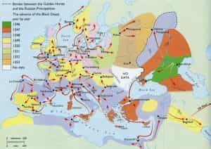
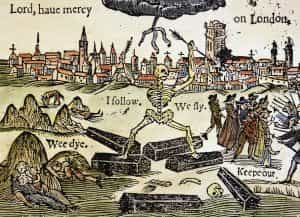

Quintus can be found at qcurtius.com. He is the author of the books On Duties, Thirty Seven, Sallust: The Conspiracy Of Catiline And The War Of Jugurtha, and other books. His work has been reviewed at Taki's Magazine. He can be followed on Twitter


I received an email last week from a young man who has been worried about the headlines in the news. He was wondering where all the daily diet of disasters, negativity, and upheaval would lead. I wanted to respond to this concern. We tend to underestimate the ability of the human mind to cope with stress, hardship, and disaster.
It is a well-known fact that Europe in the fourteenth century was decimated by the Black Plague. All across the continent, population centers were assaulted by the disease; and mortality rates, although somewhat a matter of guesswork, were very high. But what is most amazing about the plague is how quickly it was forgotten once it burned itself out. There is a resilience in humanity that is far too often underappreciated.

The life of the people went on, despite all what was happening around them. One historian, Philip Ziegler, writes in his influential study The Black Death that “One of the most striking features of the Black Death in England attested to in the court rolls of innumerable manors and those borough records that are still available, is the way in which communal life survived.” There was no social breakdown, no revolution, no mass panics threatening the rule of law.
Not only was there no social breakdown, but the plague did not impact literature and folklore as much as we might suppose. Chaucer mentions it in passing as a backdrop to his Canterbury Tales; but we find few references to it in the literature of the day. There are no substantial descriptions of the plague’s assault on London, for example.
Boccaccio describes it in Florence, and Petrarch laments the loss of a relative; but in England such accounts are absent. For a contagion that killed off an estimated one-third of the populations it infected, one would expect something more. It seems people were not tormented by the gloom and doom that some historians would have us believe. Chaucer himself was anything but a “gloom and doom” poet; in fact, his work radiates a positivity, sensuality, and a muscular zest for life.

If we fast-forward a few centuries to 1665, we find the same plague hitting London. Daniel Defoe’s Journal of the Plague Year is an excellent chronicle of a disaster; in fact, it still makes compelling reading today. Yet life went on. Things returned to normal within a few years. One of the few reminders that the plague even happened is a bit of childish verse:
Ring-a-ring o’ roses,
A pocket full of posies,
A-tishoo! A-tishoo!
We all fall down.
The 1665 London plague killed off at least 100,000 people, probably many more. And yet nothing more substantial than a few couplets survives. If we get in our time machine of the imagination and fast-forward another few hundred years, we arrive at 1918, the year of the great Spanish influenza.
Alfred Crosby’s 1998 study America’s Forgotten Pandemic: The Influenza Epidemic of 1918 noted this strange ability of the human mind to forget great tragedies. The afterword of his book was called “An Inquiry into the Peculiarities of Human Memory” and contained the following comments:
An important and almost incomprehensible fact about Spanish influenza is that it killed millions upon millions of people in a year or less. Nothing else—no infection, no war, no famine—has ever killed so man in as short a period. And yet it has never inspired awe, not in 1918 and not since, not among the citizens of any particular land and not among the citizens of the United States. This inaptitude for wonder and fear cannot be attributed to a lack of information.
In other words, the mind has the ability to process tragedy in ways that we cannot predict.
The flu epidemic swept the entire world, leaving a huge death toll in its wake. Yet in 1918 and 1919, there was no panic or social disaster in the United States that resulted from the pandemic. This matches the reactions that European populations had to the Black Death epidemic of the fourteenth century, and the 1665 London plague epidemic.
It seems that the human mind, despite all contrary expectations, is able to compartmentalize extreme suffering to an extent that we cannot fully appreciate. The mind knows what is within its control, and what is not. Who now barely remembers the 2004 Asian tsunami, which killed many thousands?
To become tormented by the headlines, to be filled with anxiety and depression over news events, is pure folly. Even in the worst catastrophes, people find ways of coping and surviving. Life goes on; people continue with their patient labors; and the world does not collapse.